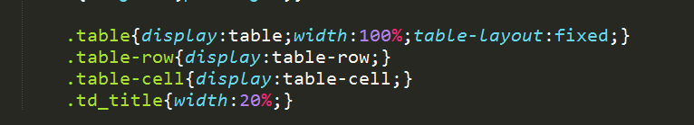

两列布局
两列布局在网页中也很常见，常见的实现方式如下：
①CSS3多列布局
CSS3有许多神奇的功能，比如说column。通常来说用来模仿报纸上的那种排版比较好，然而兼容性就是个坑啊，IE10才支持意味着对于实际应用基本不可能。之前用CSS3多列布局实现了瀑布流
②浮动
bootstrap曾经在说过：“浮动是个好同志”。bootstrap的栅格系统就是基于浮动做的。用bootstrap的栅格实现两列布局，是一件很容易的事情。
bootstrap的浮动是基于两个均左浮动，其实要实现两列布局，一个左浮动一个右浮动也可以实现。
然而，何必要两个都浮动呢？
只要第一个一个左浮动就好了，这样会形成文字环绕效果，我们想要实现两列布局只要给右边的元素加上一个margin-left就好了。
这样的布局方式有什么问题吗？有啊，问题还不少，右边的元素里边保不齐有个清除浮动，这样一下子布局就乱了。还有个问题，这样有个神奇的东西叫做改需求。我们现在实现的是左侧定宽右侧自适应，如果要改左侧的宽度，一下子就要改两个地方（左侧的宽度和右侧的margin-left），小手一抖就容易漏掉。
那有什么更好的办法吗？右侧就不要设定margin-left，直接overflow：hidden就好了。这样做的话可以形成BFC，这样内部的clear就对左侧的浮动没有影响了。第一个问题解决。这时设置左右两个盒子的间距就不用使用右边盒子的margin-left，而是使用左侧盒子的margin-right，这样的话样式设置基本都集中在了左侧盒子，尤其是各种width和margin，需要改需求的时候直接在一个地方改就好了。//这个方案也可以用来实现左中定宽、右侧自适应的两列布局。
小小总结一下，如果想要实现顶宽的两列布局，两个浮动就好了，一个浮动一个overflow：hidden也能解决问题。如果想要实现左侧定宽右侧自适应，只能采用一个浮动一个overflow：hidden这样的方案。
③flex
flex什么布局实现不了呢？答案是在某些低版本浏览器的任何布局。
④table
CSS

HTML
公司代码有一段类似的代码，用于表单和表格显示。//悄悄说一句，用table布局到处是坑。
个人观点，浮动是基本上离不开了，毕竟我不喜欢table布局。浮动中的最佳方案是一个浮动+一个overflow:hidden;